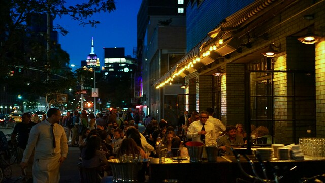
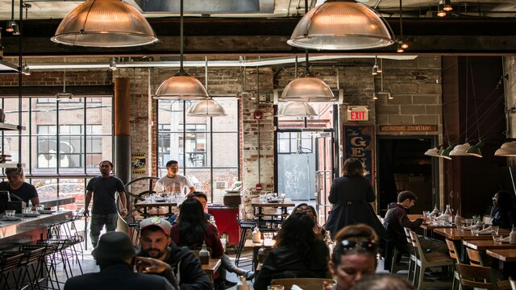

Restaurants

Joe's Pizza
Kult-Pizzeria in Greenwich Village. Berühmt für ihre dünne, knusprige New-York-Style-Pizza
- einfach, lecker und seit 1975 ein Geheimtipp für Einheimische und Touristen.

Katz's Delicatessen
Legendarisches Deli in der Lower East Side. Berühmt für seine riesigen Pastrami-Sandwiches,
die seit 1888 nach traditionellem Rezept zubereitet werden.

Peter Luger Steak House
Seit 1887 eine New Yorker Institution. Berühmt für seine zartesten Dry-Aged Steaks,
die klassische Atmosphäre und die hausgemachte Sauce - ein Muss für Fleischliebhaber.

Le Bernardin
Drei-Sterne-Michelin-Restaurant mit exquisiter französischer Küche. Bekannt für seine
frischen Meeresfrüchte, kreative Gerichte und elegantes Ambiente in Midtown.